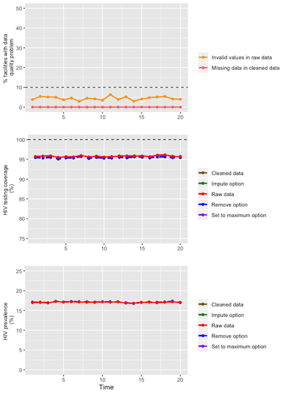
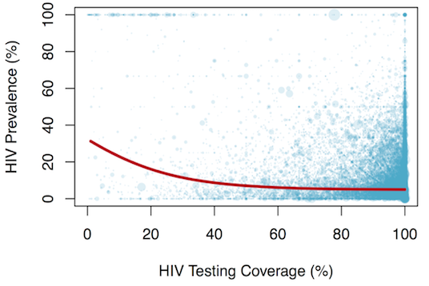
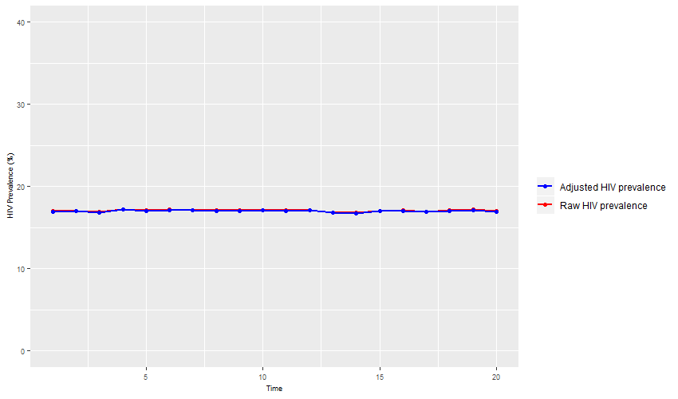

In HIV-endemic countries, antenatal care sentinel surveillance (ANC-SS) has historically been used to monitor epidemiological trends in HIV prevalence over time. Recently, several countries are transitioning from ANC-SS to the use of ANC routine testing (ANC-RT) data. Despite important advantages of using ANC-RT over conducting sentinel surveillance, the use of routinely collected program data raises concerns regarding data completeness and consistency. It is imperative that a clear and simple procedure be established for the use of such data so that valid conclusions can be drawn.
ANCRTAdjust is an R package that was developed to check and validate ANC-RT data. The specific functions have been designed to allow program managers using ANC-RT data to monitor HIV trends in endemic countries to use a standard protocol to:
A standard protocol for data validation, implemented across all countries providing ANC-RT data for monitoring HIV trends, will ensure that HIV prevalence estimates are consistent, reproducible and valid. After installation, we propose an 8-step approach to achieve this using functions implemented in the ANCRTAdjust package.
Install via Github using devtools:
# if devtools is not already installed, copy-paste the following: install.packages("devtools")
devtools::install_github("brittanyblouin/ANCRTAdjust")
library(ANCRTAdjust)Once installed, we will load a simulated ANC-RT dataset and walk through the different steps required to clean and adjust ANC-RT data.
For illustration purposes, we first load the supplied simulated ANC-RT dataset.
data(ancrt)> head(ancrt)
faciluid time n_clients n_status knownpos testpos testneg true_prv snu1 year
1 F_1 1 217 217 29 37 151 0.3041475 1 2015
2 F_1 2 240 240 31 40 169 0.2958333 1 2015
3 F_1 3 216 216 30 38 148 0.3148148 1 2015
4 F_1 4 159 159 22 28 109 0.3144654 1 2015
5 F_1 5 192 192 25 32 135 0.2968750 1 2015
6 F_1 6 214 214 30 39 145 0.3224299 1 2016After loading the data, the next step is to make sure we are following the naming conventions for the most important variables. These include:
faciluid: the unique facility identifier.time: the calendar time over which the data was collected.n_clients: the number of women from the specified facility, during the specified time period, that attended their first ANC visit.n_status: the number of women from the specified facility, during the specified time period, that had their HIV status ascertained at their first ANC visit, either by testing or through previous knowledge of their status (if available). Note: If data is not available for n_status it will automatically be created with missing data for all observations.knownpos: the number of women from the specified facility, during the specified time period, that already knew that they were HIV-positive at their first ANC visit (if available). Note: If data is not available for knownpos it will automatically be created with missing data for all observations.testpos: the number of women from the specified facility, during the specified time period, that tested positive for HIV at their first ANC visit (if available). Note: If data is not available for testpos it will automatically be created with missing data for all observations.testneg: the number of women from the specified facility, during the specified time period, that tested negative for HIV at their first ANC visit (if available). Note: If data is not available for testneg it will automatically be created with missing data for all observations.totpos: the number of women from the specified facility, during the specified time period, that were HIV-positive at their first ANC visit (if available). Note: If data is not available for totpos it will automatically be created as the sum of testpos and knownpos.Some data might be available age-disaggregated. If so, the variable should be named:
age: age category of pregnant women.Finally, data might be available for the sub-national unit 1 and for the year (allowing some results to be stratified by these variables). If so, these variables should be named:
snu1: The sub-national unit 1.year: The calendar year that the data was collected.The function check_data() can automatically verify if you have the correct data structure and rename (if warranted) the variables for you (see help(check_data) for more information).
> ancrt <- check_data(ancrt, faciluid = "faciluid", time = "time", n_clients = 'n_clients', n_status = "n_status", knownpos = "knownpos", testpos = "testpos", testneg = "testneg", snu1 = "snu1", year = "year")The third step is to clean the data using the data_clean() function. Full details on the data cleaning procedure implemented in this function can be found by typing help(data_clean) in your console. Briefly, the data is cleaned in the following ways:
n_status, testneg, testpos, knownpos, or totpos is missing for a particular observation, we can calculate it from the other variables (i.e., they are perfectly correlated).n_status > n_clients due to multiple testing, we can implement three adjustments: a) impute using the mean facility coverage, b) remove those observations, c) set testing coverage to 100%. In this case, the total number of women found to be living with HIV is also adjusted.totpos) is higher than the number of women tested (n_status), we reclassify that observation as missing (NA).faciluid and time).ancrt_cleaned <- data_clean(ancrt)An inuitive way to examine the impact of data cleaning and adjustment options is to plot the results. This is achieved using the descriptive_plot() function.
For example, the first plot below shows the overal proportion of facilities at each time point that exhibit two main types of data quality problems: a) the percent of observations with missing data for n_clients, n_status_c or totpos_c (in the cleaned data) and b) the percent of observations with invalid values for n_clients, n_status, testpos or knownpos (in the raw data).
The second graph shows how HIV testing coverage is affected by different possible types of adjusment for invalid testing coverage. Specifically, HIV testing coverage calculated from a) the raw data, b) the cleaned data, and using the three adjustment options for multiple testing: c) imputing invalid testing coverage value by the mean of the valid facility coverage estimates (impute option), d) removing invalid values (remove option), and e) replacing all HIV testing coverage higher than 100% by this value (set to maximum option).
Finally, the third plot shows temporal trends in HIV prevalence from ANC-RT data using the same options as for the second graph. In our simulated example here, we can see that all options provide similar estimates of HIV prevalence.
descriptive_plot(ancrt_cleaned)
It is important to assess the quality of the data. Specifically, missing data and impossible values can have important effects on the validity of the results. The function quality_indicators() will automatically calculate the following data quality indicators from the raw and cleaned data and output the results in a table:
n_clients, n_status, testpos, testneg and knownpos.n_clients, n_status, or totpos.n_status > n_clients (HIV testing coverage > 100%).n_status < totpos (HIV prevalence > 100%).n_status < (testpos + testneg + knownpos).n_clients, n_status, testpos, testneg and knownpos.n_clients, n_status, testpos, or knownpos.The data quality indicators can be calculated for the entire country dataset or stratified by region and/or time period (see help(quality_indicators) for more information).
ancrt_quality <- quality_indicators(ancrt_cleaned, by_region = FALSE, by_time = FALSE)> ancrt_quality
Raw.Count Raw.Percent Clean.Count Clean.Percent
Missing >=1 quarter 0 (0%) NA NA
Missing n_clients 0 (0%) 0 (0%)
Missing n_status 0 (0%) 0 (0%)
Missing testpos 0 (0%) 0 (0%)
Missing testneg 0 (0%) 0 (0%)
Missing knownpos 0 (0%) 0 (0%)
Missing >=1 variables 0 (0%) 0 (0%)
Invalid coverage 654 (3.27%) 650 (3.25%)
Invalid prevalence 0 (0%) 0 (0%)
Inconsistent n_status 475 (2.38%) 0 (0%)
Negative n_clients 0 (0%) 0 (0%)
Negative n_status 0 (0%) 0 (0%)
Negative testpos 1 (0%) 0 (0%)
Negative testneg 0 (0%) 0 (0%)
Negative knownpos 0 (0%) 0 (0%)
One or more invalid variables 886 (4.43%) 650 (3.25%)It is possible that errors exist in the data and these may be detected by investigating outlier observations. The function flag_outliers() will flag outliers for the variables n_clients, n_status_c, testpos_c, testneg_c, knownpos_c, totpos_c, prv and cov. Outliers are defined as being more than two standard deviations greater than or less than the mean value. The mean reference to which observations are compared can either be the facility-specific mean, the subnational unit 1-specific mean or the country-specific mean, according to user inputs. The flagged data can either be output as the full dataset with additional variables indicating outlier observations, or a dataset that only includes data for outlier observations. See help(flag_outliers) for more information.
outliers <- flag_outliers(ancrt_cleaned, flag_by = "facility", result = "outliers")> head(outliers)
faciluid time n_clients n_status_c testpos_c testneg_c knownpos_c totpos_c prv cov
1 F_1 4 159 159 NA 109 NA NA NA NA
2 F_1 7 NA NA NA NA 37 NA NA NA
3 F_1 13 NA NA NA NA NA NA NA 0.9956140
4 F_1 14 NA NA NA NA NA NA NA 0.9954128
5 F_1 18 NA NA NA 104 NA NA 0.3918129 NA
6 F_10 17 NA 243 8 NA 6 14 NA NAIf data quality indicators have indicated that some values are invalid, it is warranted to adjust them. Specifically, it is possible that testing coverage is higher than 100% if, following a first HIV negative test, subsequent tests at ANC visits are included (i.e., multiple testing). The mt_adjust() function can be used to adjust for this. There are three 4 different adjustment options that can be implemented if HIV testing coverage is >100%:
impute: replace n_status_c with the facility’s mean testing coverage (only including valid coverage observations to calculate the mean) multiplied by n_clients.remove: replace n_status_c wih a missing value (NA).setmax: replace n_status_c with n_clients.none: no adjustment is made.The specific adjustment to be chosen depends on the hypothesized mechanism that generated these data inconsistencies. It is recommend to explore the impact of these different adjustment options using the graphical function detaield bleow. Consult the help file for more information by typing help(mt_adjust) in your console.
ancrt_cleaned <- mt_adjust(ancrt_cleaned, adjust_option = "setmax")After data cleaning and adjustments, one could calculate HIV prevalence and testing coverage. The function hiv_prv_cov() will calculate the raw HIV prevalence, the HIV prevalence adjusted for previous adjustments, and the HIV testing coverage. Note that these estimates are not adjusted for missing reporting periods or imperfect HIV testing coverage. Results can be calculated stratified by the subnational units (snu1), the reporting period or the year according to user inputs. See help(hiv_prv_cov) for more information.
> hiv_prv_cov(ancrt_cleaned, by_period = FALSE, by_snu1 = FALSE, by_year = FALSE)
snu1 hiv_raw hiv_prv hiv_cov
1 All 17.07 17.11 95.55Alternatively, if some facilities did not report data at certain time periods, the function hiv_prv_ipcw() can be used to adjust the HIV prevalence and HIV testing coverage for missing reporting periods (thereby reducing the possibility of selection bias) using inverse probability of censoring weighting (IPCW). Results can be calculated stratified by the subnational units, the reporting period or the year according to user inputs (see help(hiv_prv_ipcw) for more information). Specifically, the IPCW is calculated as follow:
\begin{align} \ w & = & \frac{1}{P(\text{Not being censored } | \text{ facility})} \ \end{align}
> hiv_prv_ipcw(ancrt_cleaned)
snu1 hiv_raw hiv_prv hiv_cov
1 all 17.07 17.11 95.55It has been found that selection bias can be introduced into HIV prevalence estimates due to imperfect HIV testing coverage (i.e. < 100% coverage). If the average testing coverage is low (i.e., <90%), it can be advised to adjust for these potential biases.
Using data from the President Emergency Funds for AIDS Relief in Africa’s (PEPFAR) Monitoring, Evaluation, and Reporting (MER) database, we estimated adjustment factors for each 1% point increase in HIV testing coverage. To do so, we used binomial logistic regression models with facility-level fixed effects and marginal standardization to assess the effect of testing coverage on HIV prevalence (see Maheu-Giroux et al. (2019) for details on the methods, applied to Malawi’s ANC-RT data). The PEPFAR MER database contains information on more than 37 millions ANC attendees from 19,527 unique facilities from 17 countries in sub-Saharan Africa, totaling 226,541 observations over the 2015-2019 period. The figure below shows the estimated relationship between imperfect testing coverage and HIV preavlence (Fig 2)

The impcov_adjust() function can be used to implement this adjustment, after having used the the data_clean(), mt_adjust() functions. The impcov_adjust() function must be used on a data frame from either the hiv_prv_cov() function - for estimates adjusted for missing reporting periods - or the hiv_prv_ipcw() function - for estimates adjusted for missing reporting periods. If results were reported stratified by the first subnational unit (snu1), the reporting period (by_period = TRUE) and/or the year (by_year = TRUE) in hiv_prv_cov() or hiv_prv_ipcw(), the adjustment for imperfect testing coverage will also be strafied by the same variable(s). See help(impcov_adjust) for more information.
> prv_cov <- hiv_prv_cov(ancrt_cleaned, by_snu1 = TRUE, by_period = FALSE, by_year = FALSE)
> results <- impcov_adjust(data = prv_cov)> results
snu1 hiv_raw hiv_prv hiv_cov adjusted_prv
1 1 15.89 15.93 95.74 15.84
2 2 17.44 17.48 95.52 17.38
3 3 18.14 18.17 95.33 18.05Alternatively, if users want to examine the impact of this adjustment on selected observed HIV prevalence estimates at imperfect testing coverage, the same function can be use. To do so, imply enter the point estimate for HIV prevalence and HIV testing coverage and the adjusted prevalence will be outputed.
> impcov_adjust(hiv_prv_point = 25, hiv_cov_point = 75)
[1] 23.59513The final step is to examine the impact (if any) of the data cleaning and adjustments. Specifically, it can be useful to compare the raw HIV prevalence to the fully adjusted HIV prevalence (following data cleaning, adjustment for multiple testing, adjustment for missing reporting periods and adjustment for imperfect HIV testing coverage). The easiest way to compare these is by plotting the raw and fully adjusted HIV prevalence over time. The function plot_rawadjusted() will perform this task. This function requires that you input the dataframe output by impcov_adjust() and that the results be stratifed by reporting period or year. Therefore, by_period = TRUE or by_year = TRUE must be specified in the hiv_prv_cov() or hiv_prv_ipcw() function, prior to running the impcov_adjust() function. See help(plot_rawadjusted) for more information.
> prv_cov <- hiv_prv_ipcw(ancrt_cleaned, by_snu1 = FALSE, by_period = TRUE, by_year = FALSE)
> results <- impcov_adjust(prv_cov)
> plot_rawadjusted(results, snu1 = "all", time_unit = "period", hiv_raw = TRUE, y_lim = 40)
Contributions to the software are welcome and can be made as pull requests to the branch master. Issues or problems with the software can be reported and support can be obtained in the project’s Github page or by e-mailing brittany.blouin@mail.mcgill.ca.